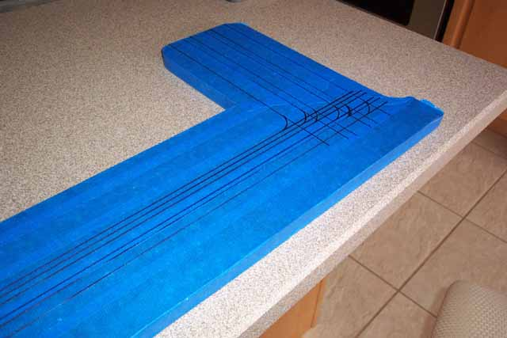
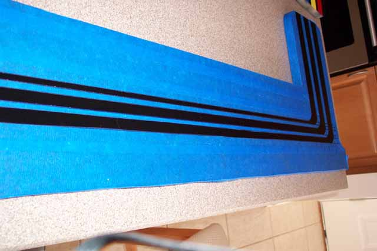
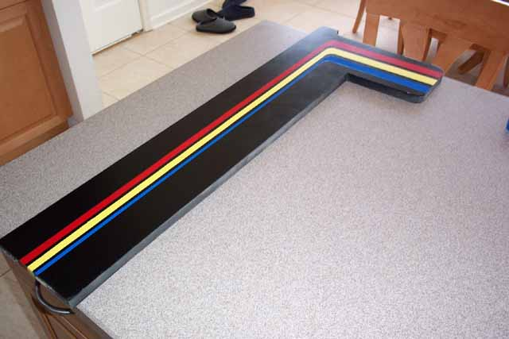

On the horizontal lines I
went as follows: 1" up, 1" wide (blue stripe), 1/2" space, 1" wide
(Yellow Stripe), 1/2" space, 1" wide (Red Stripe) and 1" left at the top.
On the vertical lines I went from the center and drew the center (yellow)
line and used 1/2 the dimensions of the horizontal lines, so the yellow
stripe is only 1/2" wide with 1/4" spacing on both sides, then I added
the Red stripe to its right 1/2" wide. On the left side is the Blue
stripe. Now from the picture, the vertical lines of the blue stripe
are thinner then the Yellow & Red stripes, so I made that line only
1/4" thick. Where the lines intersected, I think used
a small can and draw the curves.

Using an exacto blade cut
down the lines you drew, don't worry about cutting into the wood, once
painted this will not be noticed. Cut out the centers of all
of the stripes then peel away the tape to expose them and double-check
your work and make any corrections if needed.
Now cover two of the three stripes with masking tape that you can easily
peel away as you paint each color. I started with the blue
and masked off the yellow and red and covered the blue and red, painted
the yellow stripe and finally covered the blue and yellow and painted the
red. Couple of things I noticed.... the spray
paint tends to crackle a little when another color is sparyed over it too
thick, so on the 1st coating, go very thin, just a dusting on the next
coated just a little heavier and on the 3 coat you can do a full covering.

So here is the end result,
the control area side panel with the racing stripes down the sides.
Next you will need black t-molding for the fronts of the control area side
panels, you can pick these up from www.happcontrols.com.
Repeat this whole painting process on the larger side panels, I'd go double
on the dimensions and on the outside edges of the covering, don't go nuts
with masking tape, use newspaper and only masking tape the center area's
where you'll need to cut with the exacto blade.